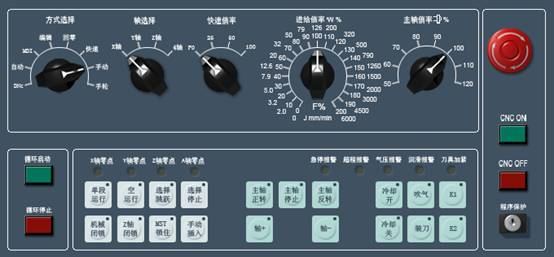
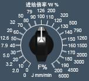
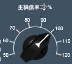
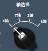

| 南京迈顺FAUNC 0i-MC面板 |
| 返回<<< |
|
机床操作面板位于窗口的右下侧，如下图所示。主要用于控制机床的运动和选择机床运行状态
，由模式选择旋钮、数控程序运行控制开关等多个部分组成，每一部分的详细说明如下。 
单段运行 选择跳跃 MST锁住 手动输入 机床主轴手动控制开关 手动开机床主轴正转 手动开机床主轴反转 手动关机床主轴
 调节数控程序运行中的进给速度，调节范围从0～200% 。置光标于旋钮上，点击鼠标左键转动。 主轴速度调节旋钮  调节主轴速度，速度调节范围从50～120%。 轴选择开关  模式开关 冷却液开关 。 |